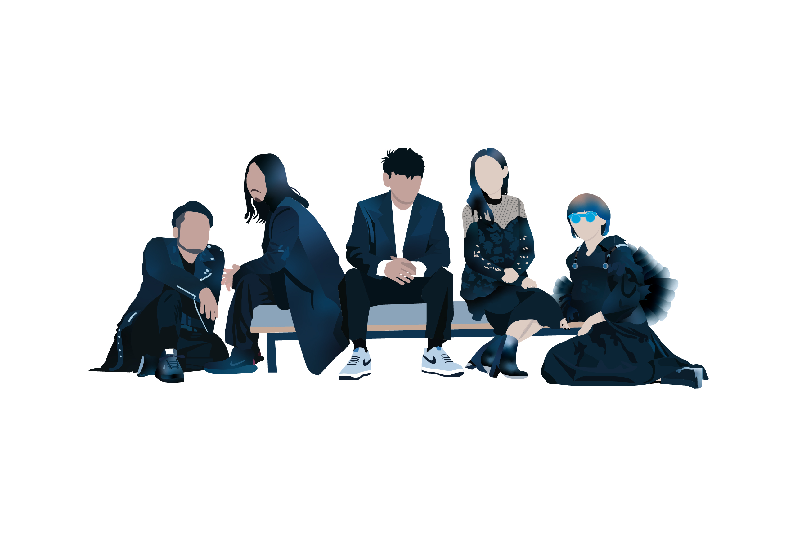
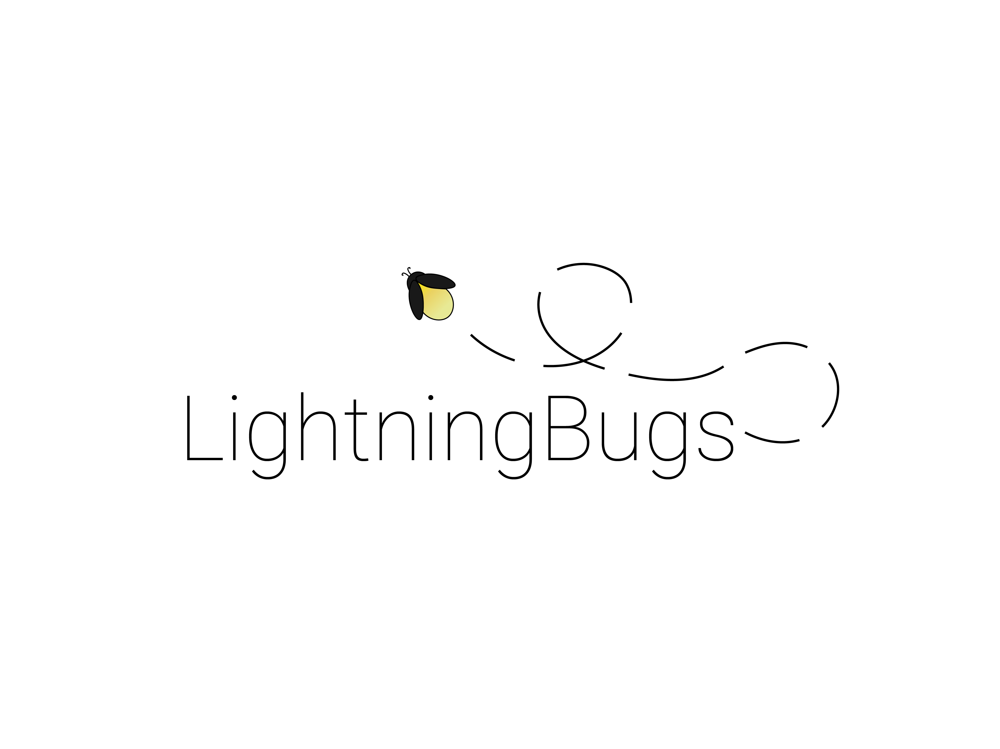
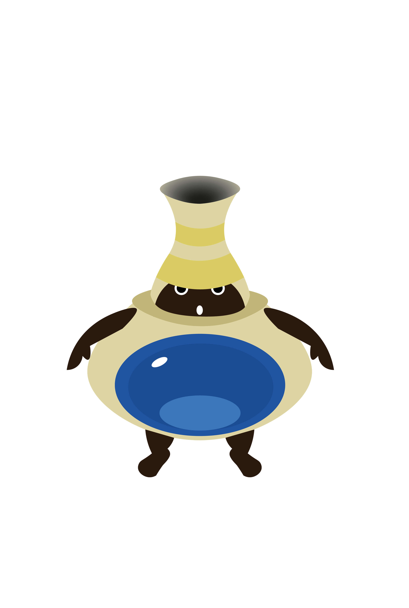
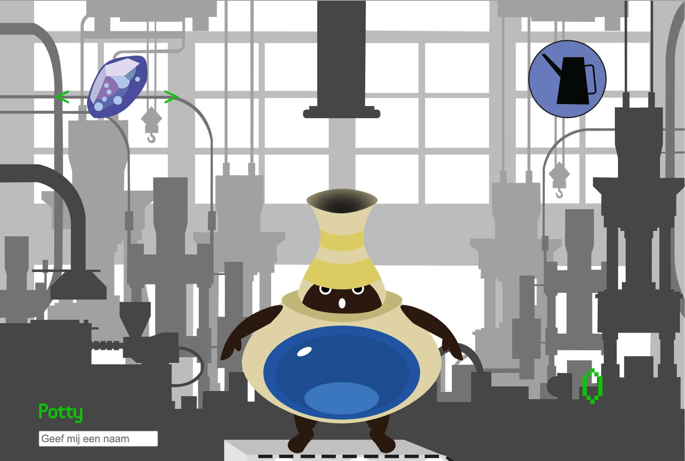
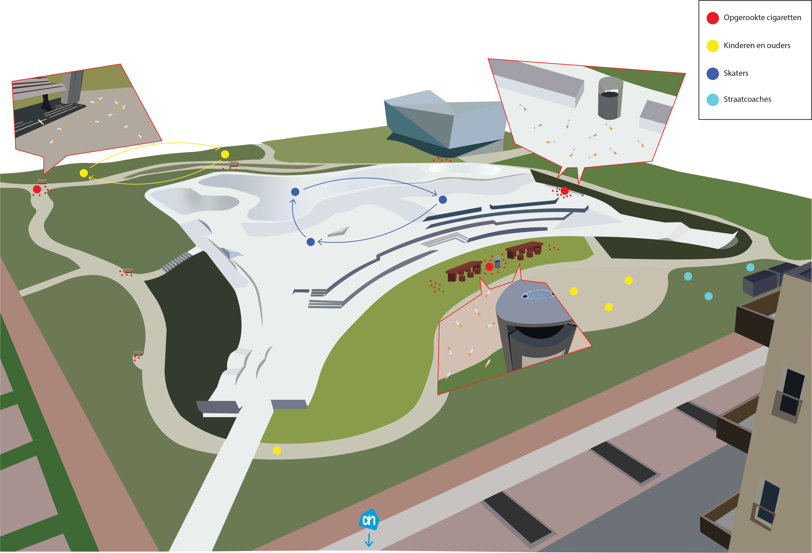

Illustrations
Here I will showcase a bunch of illustrations I made over the past couple of years. These are all made with Adobe Illustrator.
Animallogo
This illustration was the first Illustration I ever made in Illustrator. I made this logo while following an introduction course to Illustrator on my previous eduction (Grafisch Lyceum Utrecht). The exercise was to make a logo for an animal of my choice. And since I really liked French Bulldogs, I decided to make an illustration of one.
Bandposter
This illustration was made while I was following an Illustrator course last year. The idea of the exercise was to make a poster with the things we learned in that course. And so I tried out gradients to simulate a shadow effect. I first made the poster on the left and later illustrated the whole band because I didn’t have enough time left before the deadline.
Projectgroup logo
While I was studying at the Grafisch Lyceum Utrecht I made this logo for my project group called “Lightningbugs”. I made a logo for dark backgrounds, and light backgrounds as I thought that would come in handy later which it did.
Fire Emblem filmposter
This illustration was made in the same course as the bandposter I made. For this exercise we needed to make a movie poster about something we liked. And so I made a poster about one of my favorite video game series Fire Emblem. I looked at some art of the original game and tried to combine the characters together into a poster esque frame. Then I tried to copy the most important colors and shadows in a sort of simplistic style for each character, and I think it came out nicely.
"Potty" made with JavaScript
 Potty is a project I made last year in a course that introduced my class and me to JavaScript. The idea of this course was to make a tamagotchi like thing you could interact with, made with JavaScript. It could be anything, and I wanted to make a monsterlike teapot character from a game I played a while ago called Ni No Kuni. I first searched up a picture of the teapot and then tried to illustrate him from the front. Below you can click a link to the page where I talk more about the project itself.
Go to project pageContextmap Zeeburgereiland
These illustrations were made for a project called “Beyond”, that stands for beyond the web. It was a project where we had to create a solution that was not a digital product, to solve a problem on the skatepark in Amsterdam Zeeburgereiland. To help illustrate our solution, I made these contextmaps to help illustrate problems local residents had with and around the skatepark.